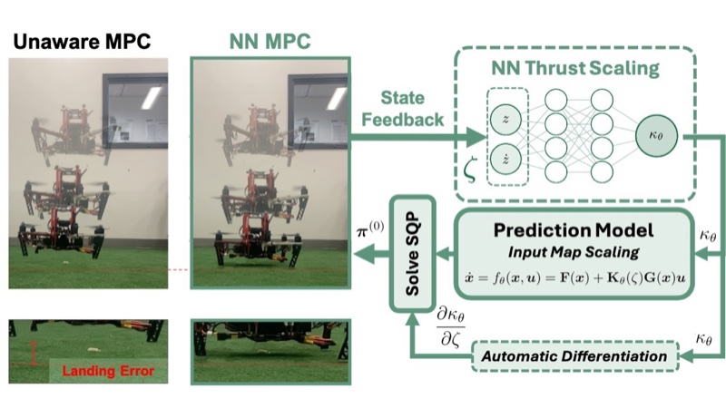

Real-time neural MPC under ground effect
Learning a scalar thrust scaling rather than an additive residual, so the model stays control-affine and the neural gradient entering the QP collapses to one row per shooting node, allowing exact gradients at real-time cost on embedded hardware.